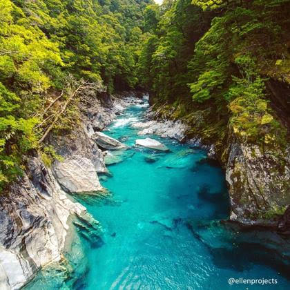

Globally, millions of people face water scarcity. Climate change, pollution, and overuse are reducing clean water supplies. Water conservation helps protect access to safe water for everyone.
In New Zealand, we value clean rivers and lakes. But overuse, farming, and urban growth threaten our waterways. Conserving water helps protect our environment and supports the Māori principle of Kaitiakitanga – caring for nature.
